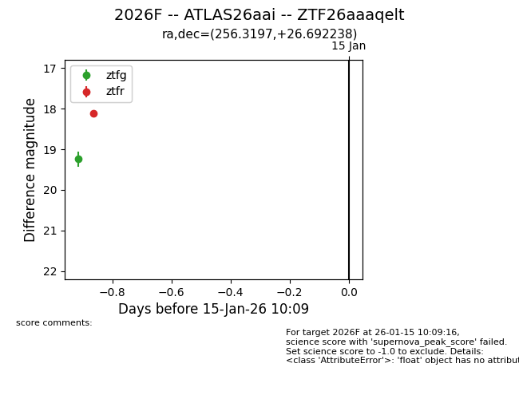
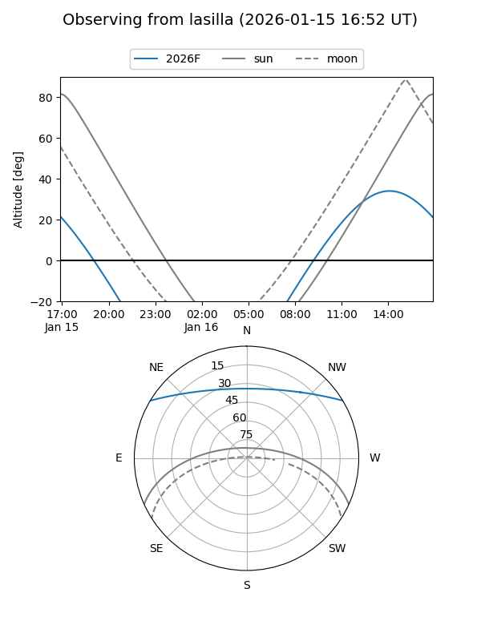
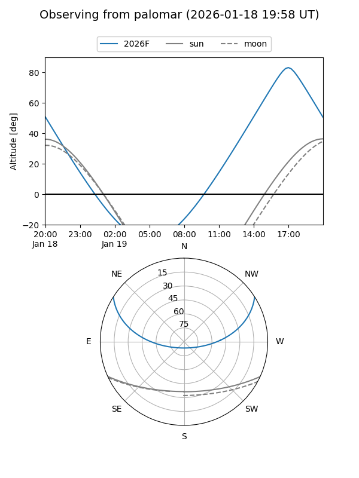
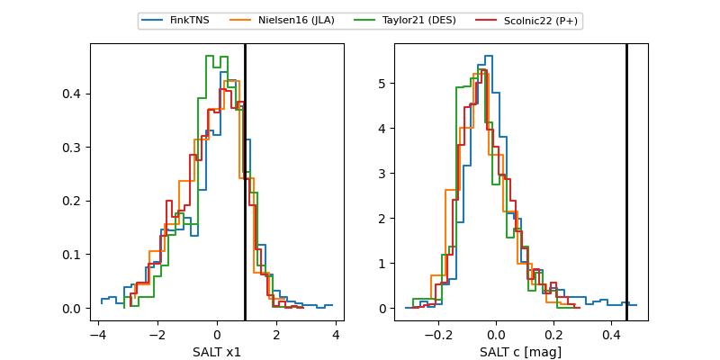

2026F
Target 2026F at 2026-01-16 21:45
Aliases and brokers:
FINK: link
Lasair: link
ALeRCE: link
TNS: link
YSE: link
alt names
ZTF26aaaqelt (ztf,fink_ztf)
2026F (tns,yse)
ATLAS26aai (atlas)
Coordinates:
equatorial (ra, dec) = 256.3197,+26.69224
equatorial (HMS+DMS) = 17:05:16.74,+26:41:32.06
galactic (l, b) = (48.1713,+34.06354)
Flags:
Photometry:
last ztfg=19.10, ztfr=18.12
2 ztfg, 1 ztfr detections
Lightcurve

Visibility


Additional plots
